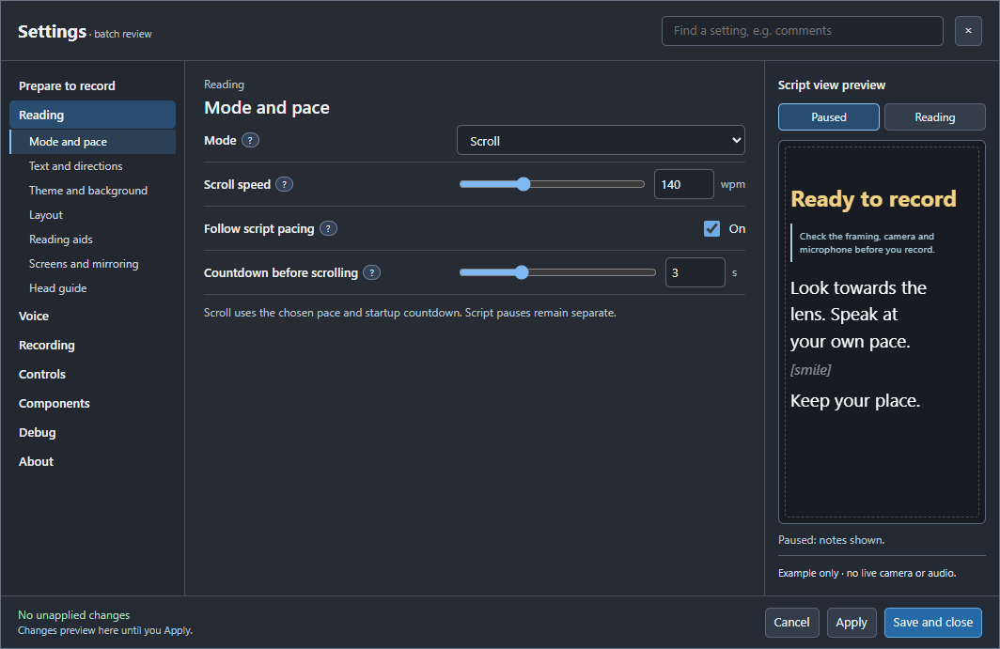
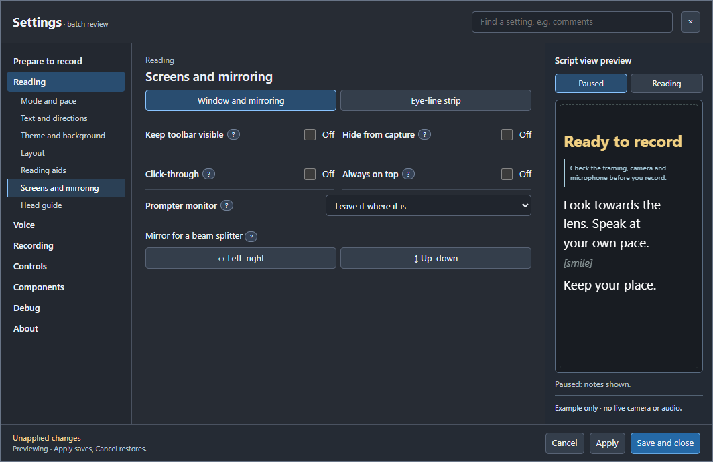
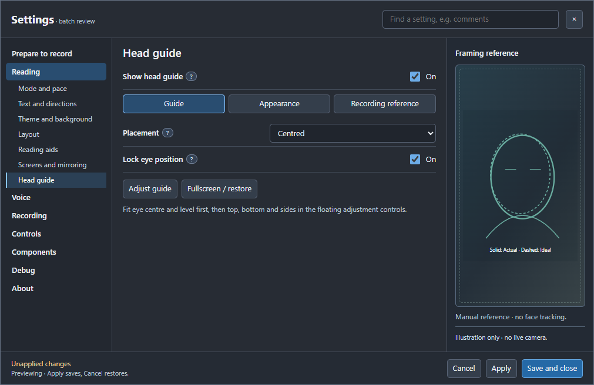
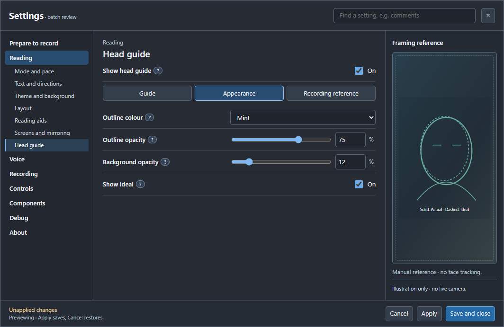
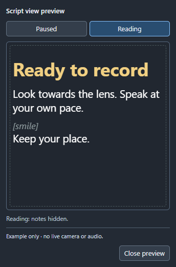

One Settings feedback batch
This review preserves the expanding left navigation, central controls, right preview and fixed footer. The interactive mock does not change Sightline, your microphone or your recorder.
Changes covered together
- One Notes/page, Voice or Scroll choice, showing only relevant controls.
- Focus strength follows Focus band, with small help pills across Reading aids.
- Visible group tabs replace hidden navigation in Screens and Reading aids.
- Restored mirror spacing and one consistent keyboard-focus treatment.
- A Head guide page with Guide, Appearance and Recording reference groups.
- The third column stays visible in short windows with enough width.
- A movable, non-modal compact preview with normal-sized controls.




Actual non-modal preview
The capture below is from the native app in an isolated test profile. It stays open while Settings changes update its sample. No camera, microphone or recording was started by the preview.

The layout changes shown in the interactive mock remain for review before final wiring. The running recording build is unchanged. After approval, the combined app preview, help, screenshots and feature-grid references will be updated together.